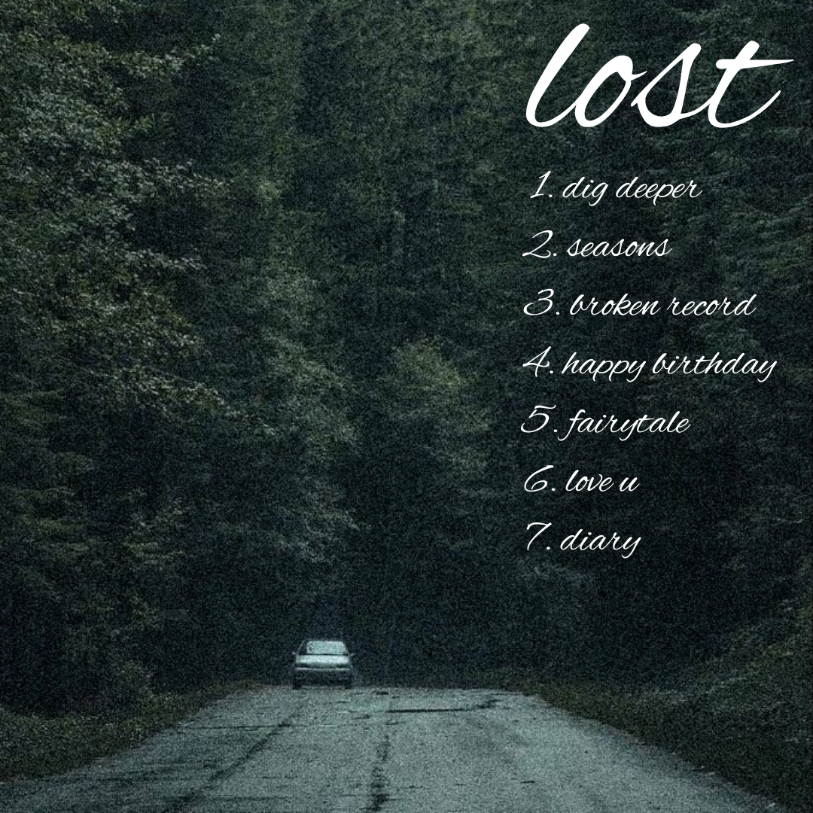
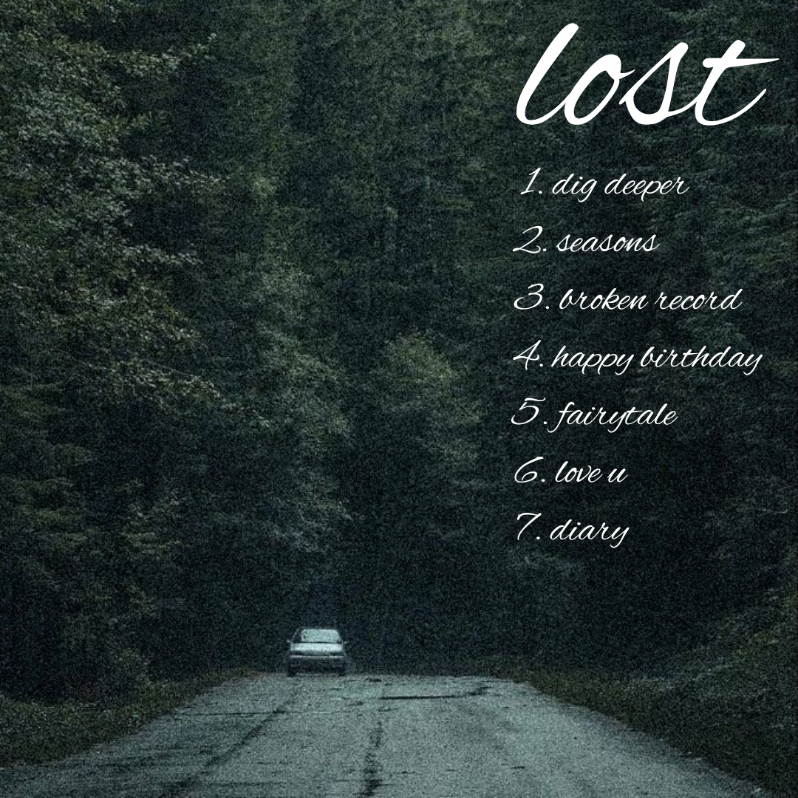

"Metaphorically, this album is about being lost in the depths of the woods, stuck with myself and my feelings. Only by facing those feelings head-on will I be able to find myself on the other side."
On Aston's 4th Ola Album, "lost", we see his artistic growth and development as a songwriter. Breaking Ola Industry tradition, "lost" is Aston's first original album, and was released as a surprise drop. The album paints a beautiful picture of Aston's journey of self-discovery across a 6-month time period, out now with 7 tracks + an additional vault track.
 
